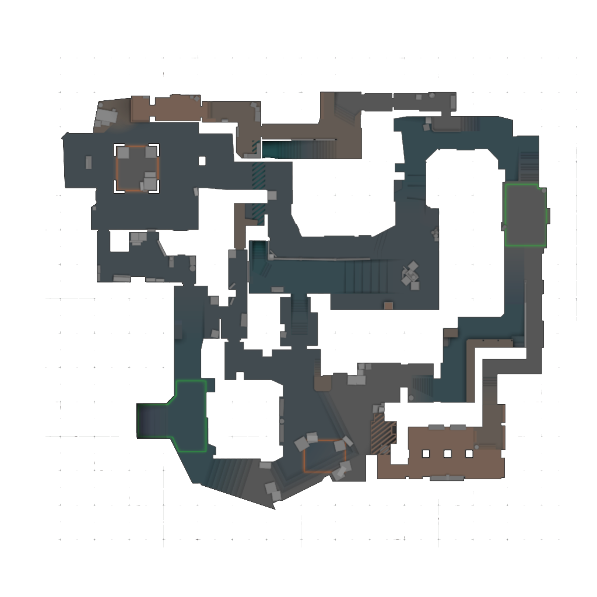
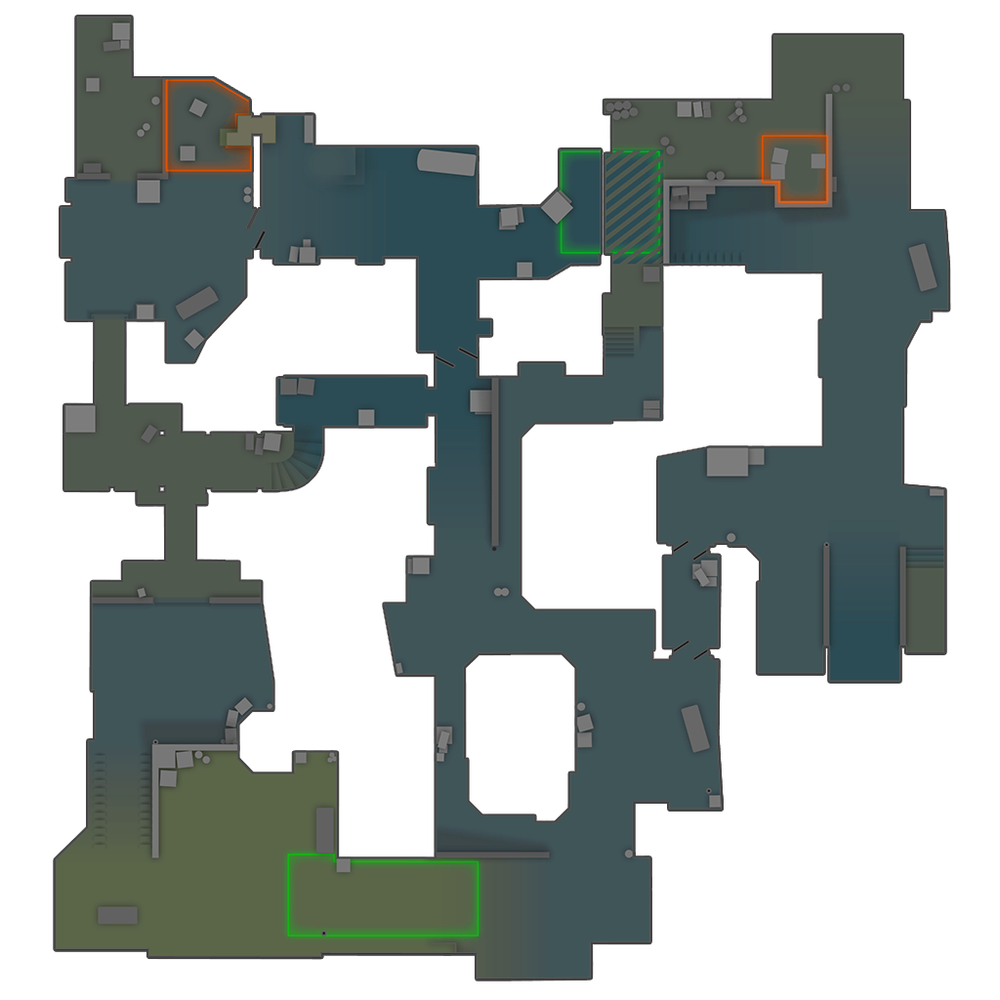
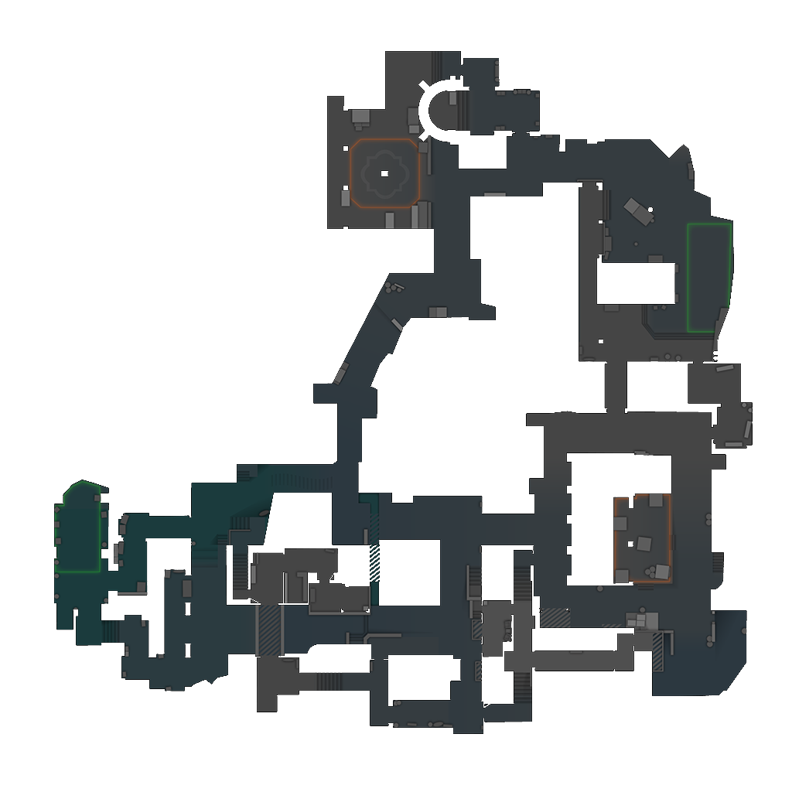
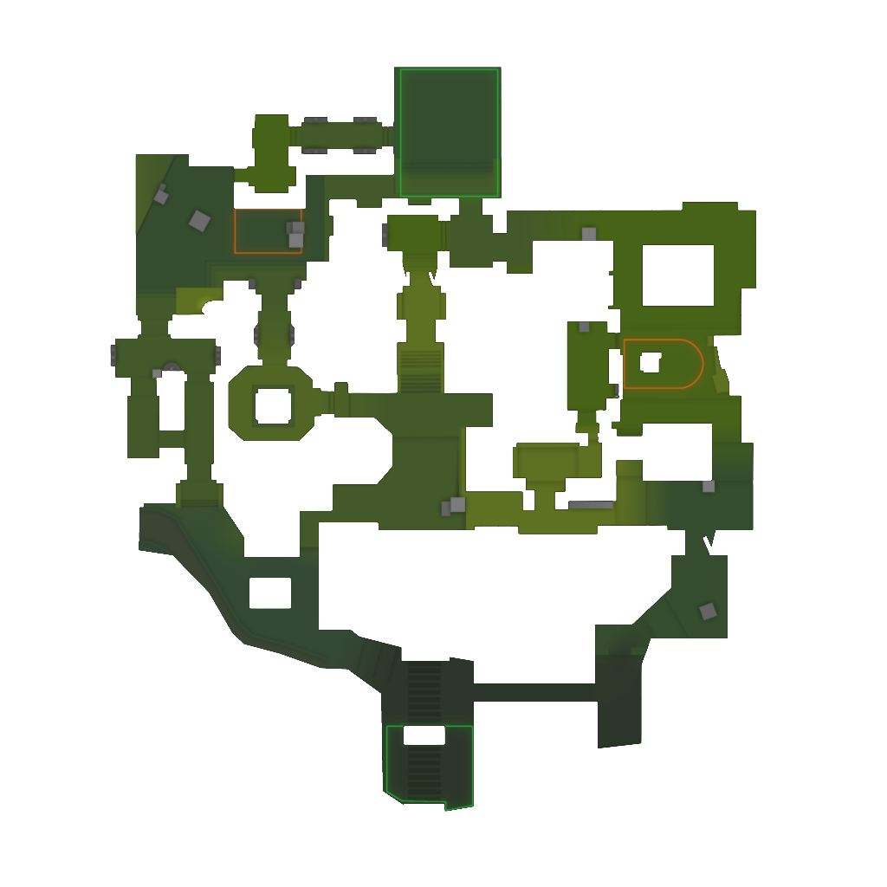
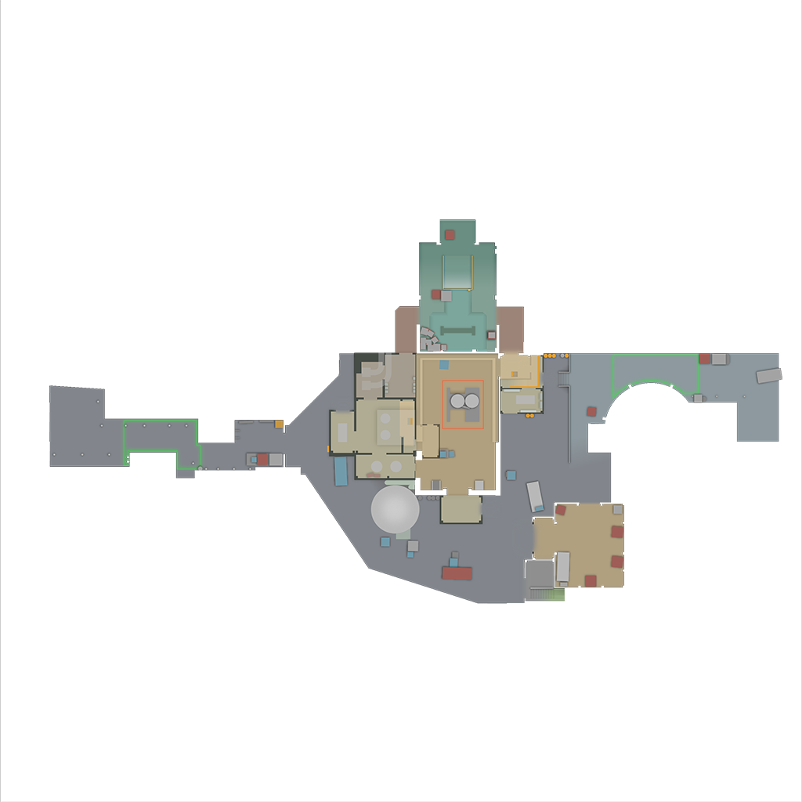
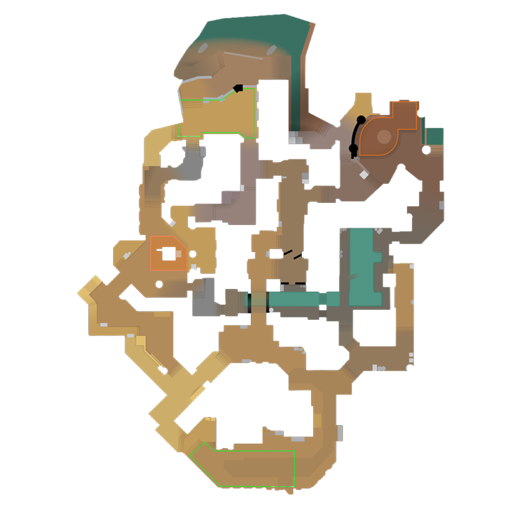
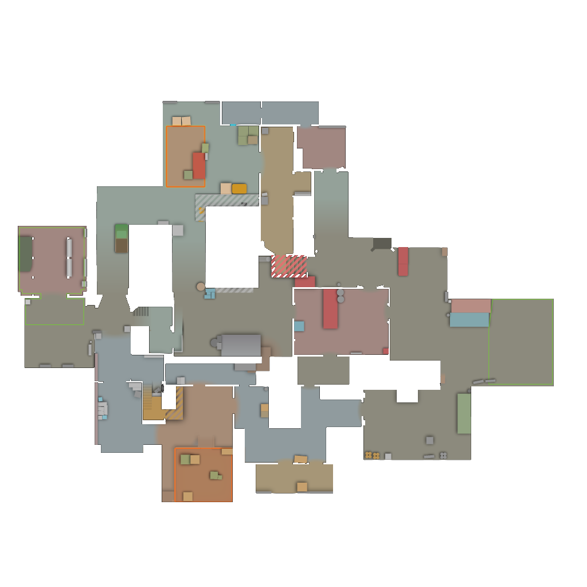

中路为王：Mirage 与 Dust II
有两张地图的结构最容易被讲清楚，也最适合新手建立"地图控制"这个概念：Mirage 与 Dust II。它们的共同点是中央区域连接着两个包点，谁先拿下中路，谁就掌握了选择进攻方向的主动权。学会在这两张图上判断"中路是谁的"，你对地图的理解就已经超过大多数新手。
Mirage
Mirage 是 CS2 中非常经典的地图，结构比较清晰，适合新玩家学习。地图主要由 A 点、B 点和 Mid 构成，Mid 是双方争夺的重要区域：T 方控制中路后，可以选择进攻 A 点，也可以转向 B 点；CT 则依靠中路的信息判断对面究竟要打哪一边。
A 点主要有 A Ramp、Palace、Connector 等进攻路线；B 点则主要通过 Apartments 等区域进入。正因为两个包点各有多种入口，Mirage 的战术比较丰富，常见打法包括 A 快攻、B 快攻、中路控图以及 A/B 分割进攻。阵营特点：T、CT 均衡，地图控制非常重要。
{kind=link}

Dust II
Dust II 是 CS 系列最经典的地图之一，地图结构简单明了，非常适合新手学习。地图主要区域包括 A、B、Mid、Long、Short 和 B Tunnel。
A Long 和 Mid 是非常重要的战斗区域。T 方可以控制 Long 进攻 A，也可以通过 Mid 寻找突破机会；Short 连接中路与 A 点，是两队争夺最频繁的一条线；B 点则通常通过 B Tunnel 进入。Dust II 看似简单，但高水平比赛中依然非常考验枪法和团队配合，因为每一个关键位置都早已被所有人研究透了，剩下的只有对枪细节和队友之间的默契。阵营特点：结构简单，枪法和地图控制非常重要。
{kind=link}

道具决定成败：Inferno 与 Ancient
Inferno 与 Ancient 的共同点是通道狭窄、包点附近有大量掩体，防守方只要站住位置就能大幅拖延进攻。因此这两张图里，投掷物的价值被放到最大——一颗及时的烟雾或燃烧弹，往往比一次成功的对枪更能改变回合走向。
Inferno
Inferno 是一张非常依赖道具的地图。Banana 是 B 点附近最重要的控制区域之一，T 方通常需要争夺 Banana，而 CT 则会使用烟雾、燃烧弹和手雷阻止 T 推进。这条通道狭窄且笔直，谁先在里面架好道具，谁就能把对方堵在出口。
A 点则拥有 Apartments、Second Mid 等多条进攻路线，需要队伍分散注意力才能形成有效突破。Inferno 的关键在于利用投掷物控制狭窄通道，再寻找合适的进攻时机。阵营特点：CT 防守较强，道具价值很高。
{kind=link}

Ancient
Ancient 拥有明显的中路结构，Mid 是双方争夺的重要区域。T 方可以通过 Mid、A 区和 B 区多方向展开进攻，B 点周围拥有 Cave、Elbow 等重要位置。
由于地图存在较多狭窄通道，烟雾弹和闪光弹能够有效帮助队伍突破防线：烟雾负责切断防守方的视线，闪光负责争抢那几秒钟的先手。阵营特点：地图控制和道具配合非常重要。
{kind=link}

立体与开放：Nuke 与 Anubis
前面四张图基本都在一个平面上展开，而 Nuke 与 Anubis 各自提供了不同的空间感：一个把战场叠成上下两层，一个把区域之间的连接做得更开放。它们对玩家的地图理解和转点判断要求更高。
Nuke
Nuke 最大的特点是拥有上下两层结构，因此地图路线比普通地图更加复杂。A 点位于上层，B 点位于下层，Outside、Ramp、Secret 等区域连接着地图的重要位置。
T 方经常通过 Outside 控制地图，再根据 CT 的防守情况选择进攻 A 或 B；CT 则要同时兼顾上下两层的防守，沟通稍有遗漏就会被打到空档。阵营特点：CT 防守优势明显，团队配合非常重要。
{kind=link}

Nuke 的上下两层结构让它的路线判断、报点方式和残局处理都与其他地图不同，新手很容易在里面"迷路"。建议先熟悉 Mirage、Dust II 这类平面结构清晰的地图，再回头学习 Nuke。
Anubis
Anubis 的地图空间相对开放，中路和两侧区域之间存在较多连接。T 方可以通过控制 Mid 获得更多进攻选择，同时利用烟雾和闪光突破 CT 的防守。
也正因为连接多，Anubis 对玩家的枪法、地图理解以及转点能力都有一定要求：进攻方要判断从哪里发起，防守方则要决定把人力放在哪一侧。阵营特点：T 方进攻路线较多，地图控制十分重要。
{kind=link}

重制地图：Cache
Cache 是经典的工业设施风格地图，拥有 A、B 和 Mid 等主要区域。Mid 是重要的地图控制区域，T 方控制中路后可以快速选择进攻方向；A 点附近存在多个适合交战的位置，B 点则更加依赖道具配合和团队推进。
这张图在 CS2 中以重制后的版本回归，部分区域的结构与早期版本相比有所调整，本页使用的是游戏内的雷达资源。阵营特点：攻防比较均衡，重视中路控制——它既不像 Inferno 那样偏向防守方，也不像 Anubis 那样给进攻方大量路线，胜负更多取决于中路的争夺结果和队伍的转点速度。
{kind=link}

七张地图放在一起看，会发现它们的差别主要落在三件事上：中路能不能被控制、包点附近有多少条进攻路线、道具能不能封锁关键通道。 判断清楚这三点，无论是进攻时选择方向，还是防守时分配人力，都会比单纯背点位更有依据。
- Mirage 与 Dust II 结构清晰、中路决定进攻选择，是最适合新手入门的两张地图。
- Inferno 与 Ancient 通道狭窄，烟雾弹、燃烧弹和闪光弹的价值被放大，道具配合比枪法更关键。
- Nuke 拥有上下两层结构，路线复杂、CT 防守优势明显，建议熟悉平面地图后再学。
- Anubis 区域连接多、进攻路线多，对转点能力和地图理解要求较高。
- 判断一张地图只需要问三个问题：中路归谁、包点有几条路、道具能不能封住关键通道。